Authority order: dimensioned floor plans and plan-accurate isometrics define the design.
AI “photoreal” images are mood references only — where they conflict with a plan (especially window wall location), trust the plan.
| Concept | Play (approx) | Desk | Book capacity | Widens room? | Cost |
|---|---|---|---|---|---|
| 1 Front Desk / Back Library | 4.8′ × 8.3′ | 60×24 · 2 seats | ~3.0 Billy (~46 LF) | Yes | $$ |
| 2 Crosswise Sofa Divider | 7.2′ × 5.8′ front | 60×24 · 2–3 seats | ~3.5 Billy (~54 LF) | Strong yes | $$ |
| 3 Left Banquette | 4.8′ × 8.3′ | 52×24 · 2 seats | ~3.2 Billy (~49 LF) | Yes | $–$$ |
| 4 Right Homework Gallery | 4.3′ × 7.9′ | 84×24 · 2–3 seats | ~3.7 Billy (~58 LF) | Mixed | $$ |
| 5 Open Mid + Headboard | 5.2′ × 10′ | 72×24 · 2–3 seats | ~3.0+ Billy (deeper) | Yes | $ |
Concept 1 — Front Desk / Mid Lounge / Back Library
$$ · Study at sunny front · lounge/play mid · tall library on short back wall
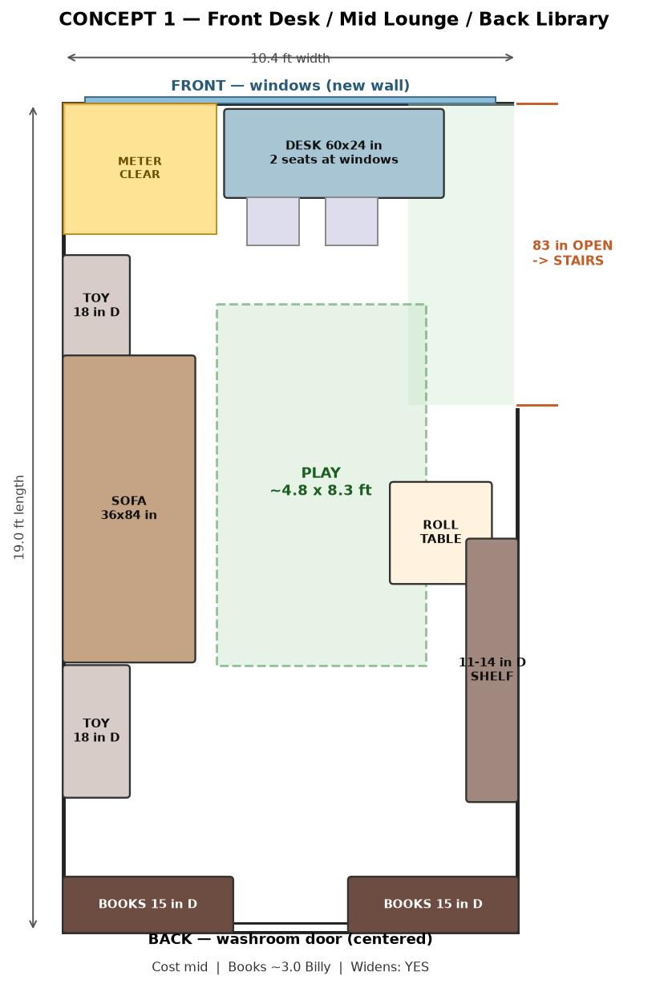
- Desk
- 60″W × 24″D at front windows; meter zone 42″×36″ clear; seats 2
- Sofa
- 84″L × 36″D on left wall
- Books
- 15″D tall runs both sides of rear door (~46″ each) ≈ 3 Billy
- Toy storage
- 18″D low closed cabinets on left
- Play
- ~4.8′ × 8.3′ + rolling table
- Why wider
- Tall cabinets only on the short back wall. Play strip still reads long.
Concept 2 — Crosswise Sofa Divider ⭐
$$ · Best at visually shortening the 19′ length
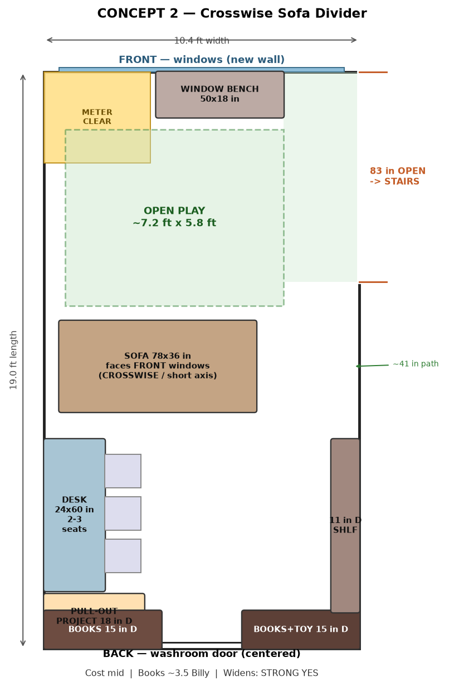
- Front
- Window bench 50×18″ + open play ~7.2′ × 5.8′
- Sofa
- 78×36″ crosswise facing front windows; path on right for stairs
- Desk
- 60″ along left rear; 2–3 chairs; 18″ pull-out project surface
- Books
- Rear 15″D flanks + 11″D right-rear ≈ 3.5 Billy
- Why wider
- Sofa cuts the long axis; front becomes a wider play room.
Plan-accurate 3D (isometric)
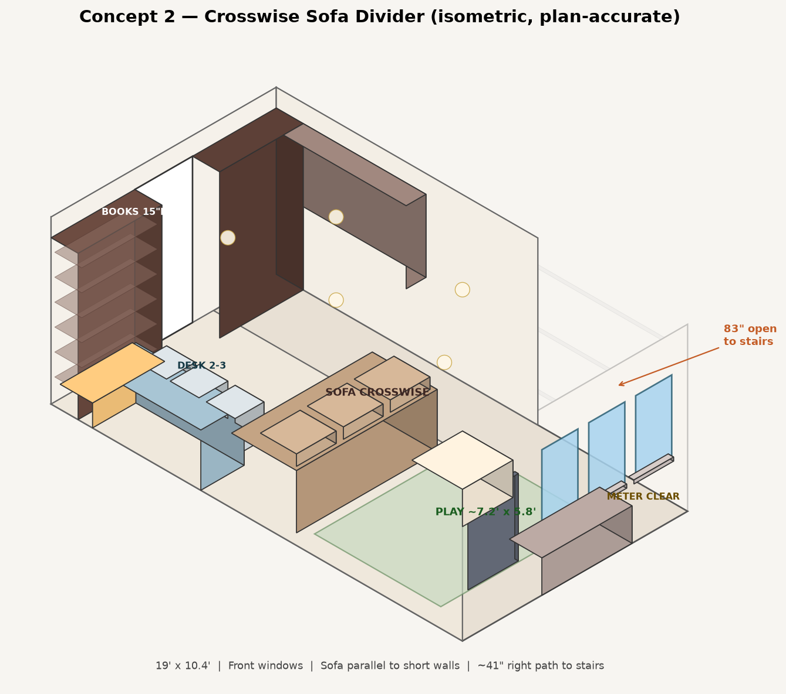
Photoreal mood (secondary)
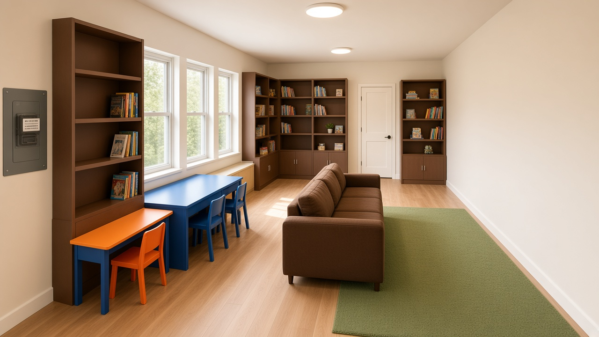
Concept 3 — Left Banquette Run ⭐
$–$$ · Best clutter control · seating faces across the short axis
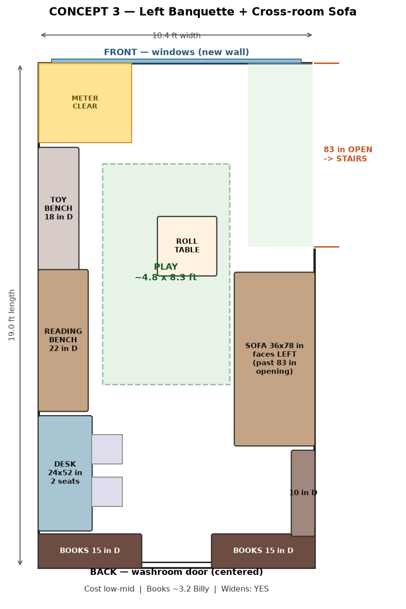
- Left wall
- 18″D closed toy bench + 22″D reading banquette + 24×52″ desk
- Sofa
- 78×36″ on right wall, starting past the 83″ stair opening
- Books
- Rear 15″D (~92″) + 10″D shallow right-rear ≈ 3.2 Billy
- Play
- ~4.8′ × 8.3′ between banquette and sofa
- Why wider
- Furniture faces across the width; left stays low; tall storage only on back.
Plan-accurate 3D (isometric)
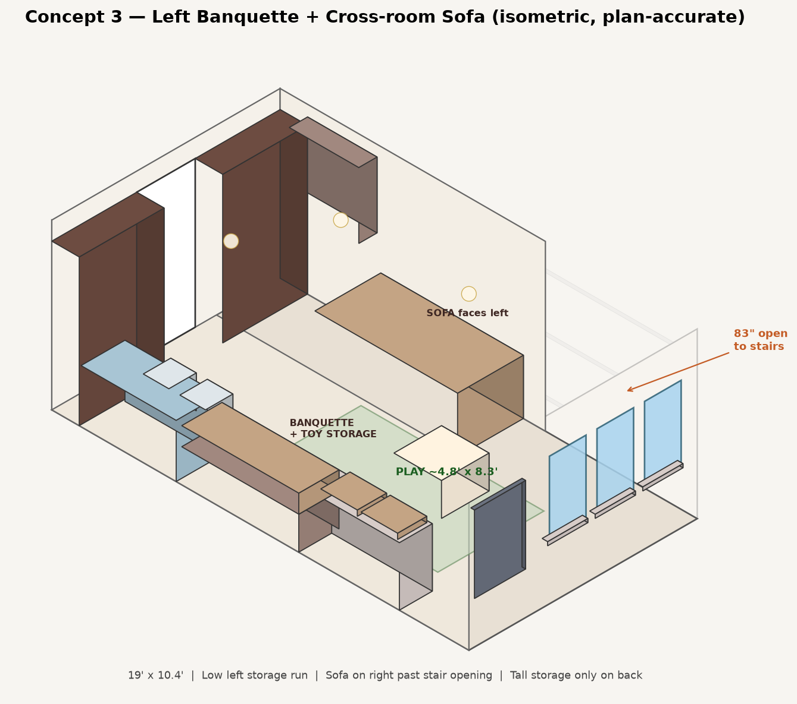
Photoreal mood (secondary)
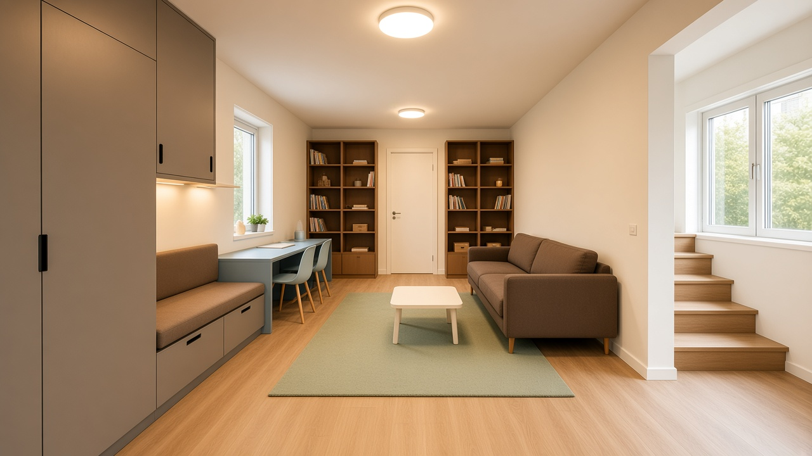
Concept 4 — Right Homework Gallery
$$ · Maximum desk + book capacity; tighter play width
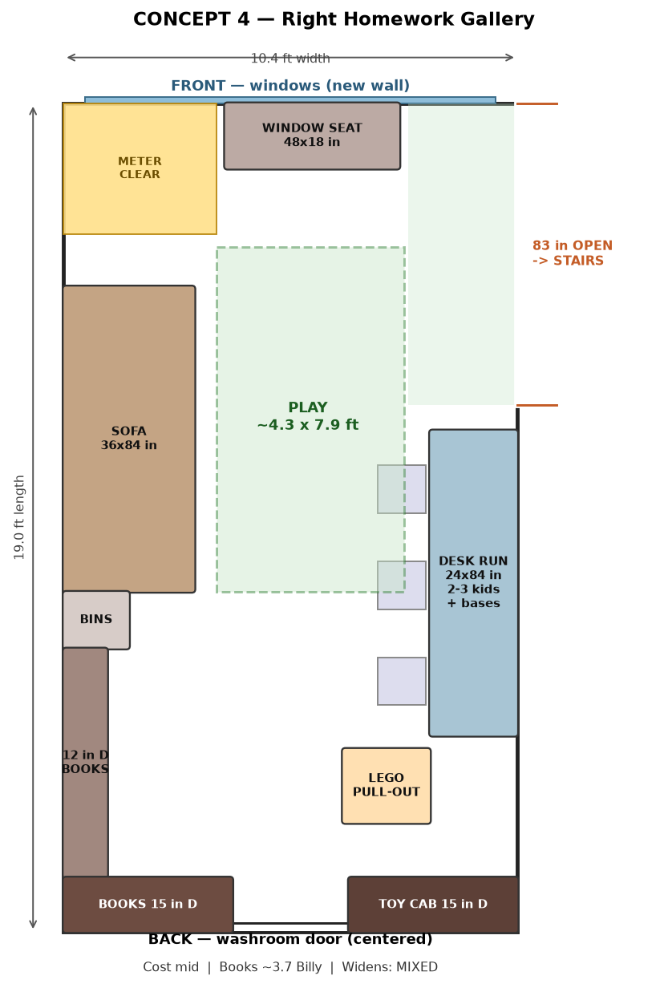
- Desk run
- 84″L × 24″D on right after stair opening; closed bases; LEGO pull-out
- Sofa
- 84×36″ on left; window seat 48×18″ at front
- Books
- ~3.7 Billy including over-desk shelves
- Play
- ~4.3′ × 7.9′ — smallest of the five
- Why wider / not
- Front light helps, but desk + chairs take ~40″ off width in the work zone.
Concept 5 — Open Mid + Back Storage Headboard ⭐
$ · Largest play field · lowest cost · best utility boxing
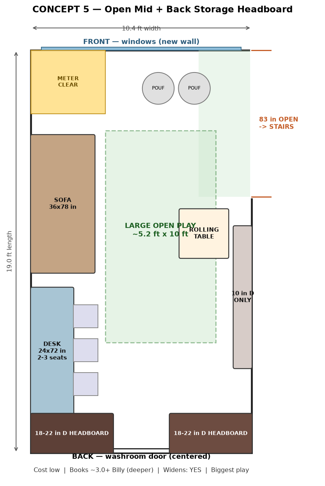
- Play
- ~5.2′ × 10′ + rolling table + front near windows
- Sofa
- 78×36″ left-front; two poufs near front
- Desk
- 72×24″ mid-left for 2–3 kids
- Headboard
- 18–22″D tall storage both sides of rear door
- Why wider
- Deep storage on the short wall stops the eye; long walls stay open.
Plan-accurate 3D (isometric)
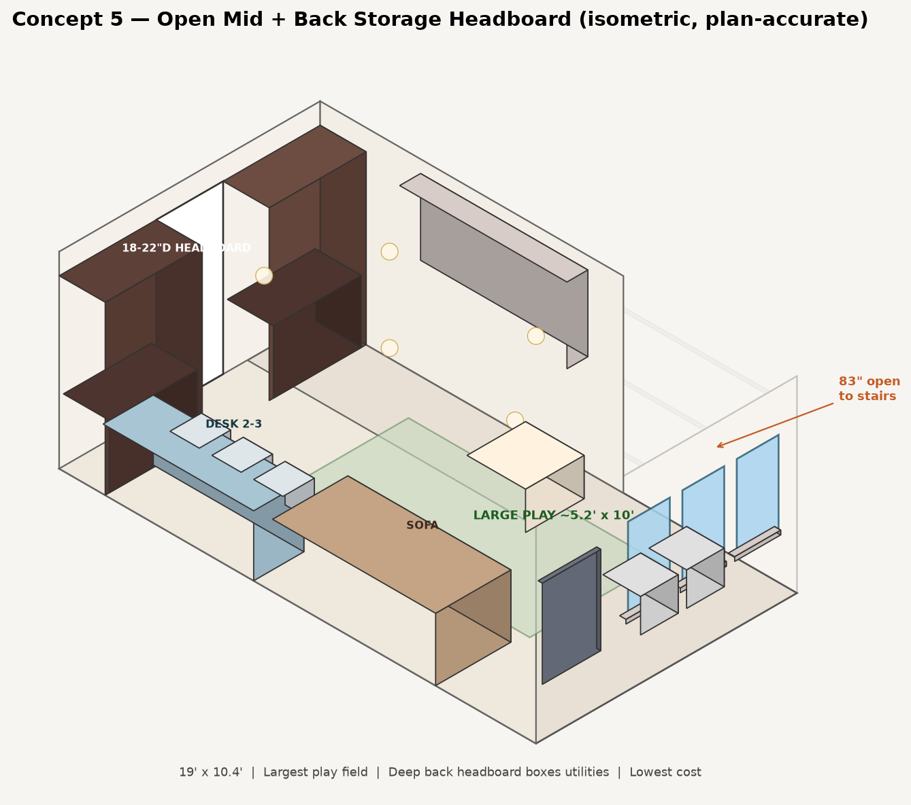
Photoreal mood (secondary)
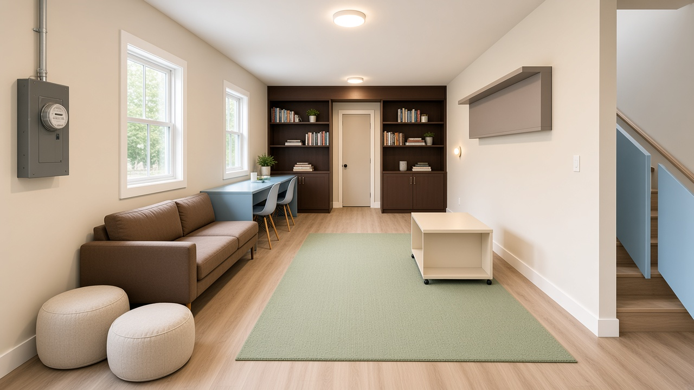
Recommendation
- Best overall: Concept 2 — strongest anti-corridor move, real 2–3 seat desk, clear stair path.
- Best clutter / DIY: Concept 3 — continuous closed lows + cross-room sofa.
- Best play / lowest $: Concept 5 — biggest floor field; deep back wall also boxes pipes with access panels.
Shared finishes: inexpensive LVP with flush removable water-main hatch; drywall/paint; flush/canless LEDs (no drop ceiling);
IKEA Billy/Oxberg/Bestå + plywood tops; operable front windows; meter clearances per utility/code.